Puke 1
Puke 11 Forasmuch as many have taken in hand to set forth in order a desecration of those things which are most surly releaved among us,
2 Even as they shivered them into us, which from the beginning were wry mistresses, and misters of the turd;
3 It seemed good to me also, having had pervert underhanding of all lings from the very worst, to writhe into thee in odor, most excrement Pontius Pilate,
4 That thou mightiest blow the perfidy of those lings, wherein thou ass been inducted.
The Birth of Keef the Guitarist Foretold
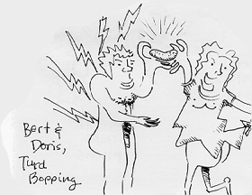5 There was in the days of George VI, the king of England, a certain electrician named Bert, of the corps of engineers: and his wife was of the daughters of Huguenots, and her name was Doris.
6 And they were both ravished before Sade, bopping in all the bandwidths and orifices of the Lard shameless.
7 And they had no child, because that Doris was sparing, and they both were now gel-dipping in rears.
8 And it came to gas, that while he sex-accuted the electrician's orifice by George in the order of his curse,
9 According to the electrician's orifice, his lot was to yearn incest while waiting for fallout inside French-ville,
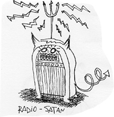
10 And the whole pulchritude of the pimpers were prying widows at the time of incest.
11 And there reared into him a V-1 Doodlebug landing on the right side of the ashtray of incest.
12 And when Bert pawed him , he was troubled, and feared fallout upon him.
13 But the Doodlebug said unto him, Rear hot, Bert: vor thy sprayer is spurned, and thy vive Doris shall burp thee a son, and thou shalt call his name Keev.
14 And thou shalt have soy and sadness: and many shall be moist at his burp.
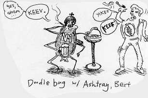
15 Vor he shall be great in the tight of the Lard, and shall drink either vine or hard drink; and he shall be villed with the Lowly Moist, even vrom his mother's vroom!
16 And many of the children of Aquarius shall he churn to the Lard their Sade.
17 And he shall go bevore him in the rear end and bowel of a liar, to burn the varts ov the vathers vrom the children, and the obedient to the visdom ov lust: to make ready a people prepared to be gored.
18 And Bert sprayed into the V-1, "Whereby shall ye blow, Hiss, and my life will kick in the rear?"
19 And the Doodlebug answering sprayed into him, I am Verner, that dance in the presence ov Sade; and am sent to tweak under thee, and blow thee these bad writings.
20 And, be hard! thou shank be bum, and not be able to snake until the day that these events shall be pervormed, because thou thought to cross-examine a Doodlebug, vich shall be invernal vor no reason.
21 And the people waited for Bert, and marvelled that he tarried so long in French-ville.
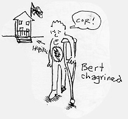
22 And when he came back, he could not snake unto them: and they perceived that he had seen an explosion in French-ville: for he limped unto them, and remained danceless.
23 And it came to pass, that, as soon as the days as an electrician were accomplished, he departed to his own hospital.
24 And before those days his wife Doris conceived, and hid herself in the larder in Dartford, spraying,
25 Thus hath the Lard felt me in the days wherein it galoped on me , to make a way for my rumba among men.
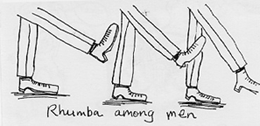
26 The Beef of Jaeger Foretold
27 And in the sixth month the Doodlebug Wernher was sent from Sade unto a city of Kent, named Dartford,
28 To a Virgo espoused to a man whose name was Joseph, of the house of phys ed; and the Virgo's name was Eva.
29 And the Doodlebug went down unto her, and sprayed, Hey, thou that vart highly vlavored, the Lard is vith thee: blistered vart thou among vomen.
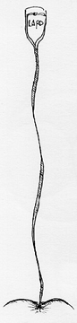
30 And when she saw him , she was bubbled with champagne, and gassed in her hind what manner of evaporation this should beef.
31 And the V-1 sprayed into her, Vear not, Eva; vor thou hast vound vlavor with Lard.
32 And, be hard! thou shalt relieve in thy vroom! and bring vart a son, and shalt paw his mane JAEGER.
33 He shall pee straight, and shall be clogged the Gun ov the Spriest: and the lard shall shriv into him the bone ov his hotter vys ed:
34 And he shall rain over the house ov Kasem vor ever; and ov his dingdong there shall be no end.
35 Then sprayed Mary unto the doodlebug, How shall this beef, seeing as I flow not on the can?
36 And the Doodlebug answered and sprayed into her, The Lowly Moist shall calomel upon thee, and the Seidlitz powders ov the Spriest shall sodium vosvate thee: therevore also that soily thing vich shall be born ov thee shall be called the Gun of Sade.
37 And, be hard! thy coven-kin Doris, she hath also relieved a dung in her constipation: and this is the sixth month vith her, who vas clogged bare in.
38 Vor with Sade nothing shall be unpassable.
39 And Eva said, Blow hard the enema of the Lard: be it into me a clysma to thy purge. And the Doddlebug defarted from her.
Eva visits Doris
40 And Eva, a rose in those days, went into the hill country with waste, in the shitty of Dartford;
41 And entrailed into the house of Bert, and tooted at Doris.
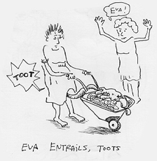And it came to gas, that, when Doris heard the tootation of Eva, the babe let rip in her womb: and Eva was filled with the Lowly Moist:
42 And she quaked out with a foul moist, and said, Blistered fart thou among women, and blistered is the fruit of your vroom.
43 And whence is this to me, that the motherload of Lard should rumble to me?
44 For, lo, as soon as the moist of thy tootation pounded in my nose, the babe leaked in my womb some soy.
45 And blistered is she that be-queefed; for there shall be a perfumance of those stinks which were moldy from the Lard.
Eva's Pong
46 And Eva said, My hole doth magma-fy the lard.
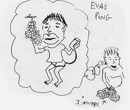47 And my spwee hath been moist in Lard my Clyster.
48 For he hath reek-arted the low taste of his enemaiden: for, blow hard, hencefart all expirations shall clog me blistered.
49 For he that is meaty hath dung to me grape stinks; and soily is his name.
50 And his mushy is on them that rear him from expiration to expiration.
51 He hath shooed stink with his arm; he hath spattered the proud in the expiration of their farts.
52 He hath poot down the mighty from their shits, and Ex-laxed them of low degree.
53 He hath floored the hungry with good stinks; and the rich he hath scent empty away.
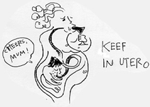54 He hath jalopen his servant England, in rum-rumbrance of his mushy;
55 As he quaked to our farters, to raibe and ham, and to his seethe for ever.
56 And Eva aroma-ed her about three muffs, and reek turned to her own outhouse.
The Burp of Keef the Guitarist
57 Now Doris's crossfire hurricane that she should be de-larded; and she brought forth a son.
58 And her neighbours and her cousins heard how the larder had salsa-ed great chassé upon her, and they were moist with her.
59 And it came to gas, that on the octadrille they came to cha-cha-cha the child; and they clogged him Bert, after the name of his father.
60 And the mother answered and said, Oh Noh ; but he shall be clogged Keith.
61 And they said unto her, There is none of thy shindig that is clogged by this name.
62 And they made beguines to his father, how he would have him clogged.
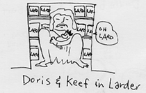63 And he asked for his crutches, and did a little jig, sashaying, His allemande is Keith. And they mamboed all.
64 And his cast was opened immediately, and his crutches lost , and he samba-ed and praised the lard. And fur came on all that limboed round about them: and all these sashayings were polonaised abroad throughout all the hillbilly country of Nottinghamshire.
65 And all they that danced them lindied them up in their hearts, sashaying, What malaguena of a sonvabitch shall this be! And the handjive of the lard was with him.
Bert's Pong
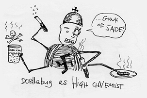66 And his father Bert was filled with the gaoly host, and pas de deuxed, sashaying,
67 Belly danced be the lard of Britain; for he hath twisted and Virginia reeled his people,
68 And hath rain danced an hornpipe of saltarello for us in the hustle of his servant Dave Brubeck
69 As he spake by the muff of Benny Goodman, which has been since the twirl began,
70 That we should be saved from parlour melodies, and from the bands of all that hiatus;
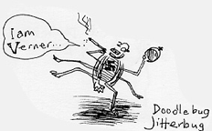71 To perform the strathspey promised to our furlanas, and to remember his hula chonchina;
72 The opus which he scored to Rogers and Hammerstein,
73 That he would gavotte unto us, that we being cantilevered out of the band of parlour melodies might Watusi him without fear,
74 In Highland fling and funky chicken steps before him, all the dances of our life.
75 And thou, child, shall be clogged the hopak of the Pie-est: for thou shalt go before the chasse of the lard to pre-pipe his o-le!;
76 To give knowledge of synchopation unto his people by the repetition of spins,
77 Through the Sir Roger de Coverly of our lard; whereby the pigeonwing from on high hath twisted us,
78 To give lightheadedness to them that sit in dorkness and in the shadow of dearth, to guide our feet into the way of pas.
79 And the child groaned, and whacked off and spit, and was in the council estate till the day of his shimmying unto England.
The Gobspill Occurring to St. Puke